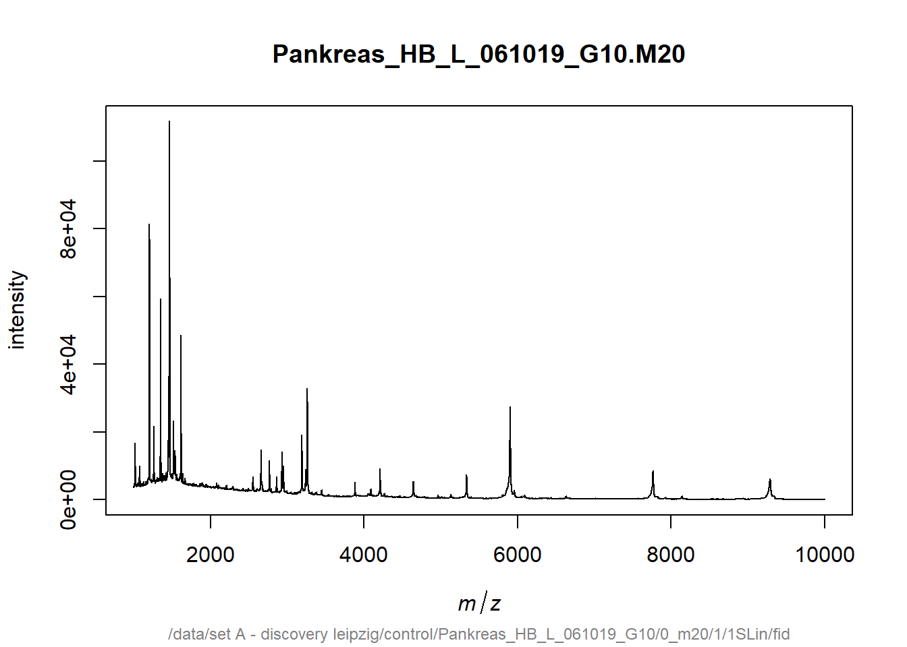
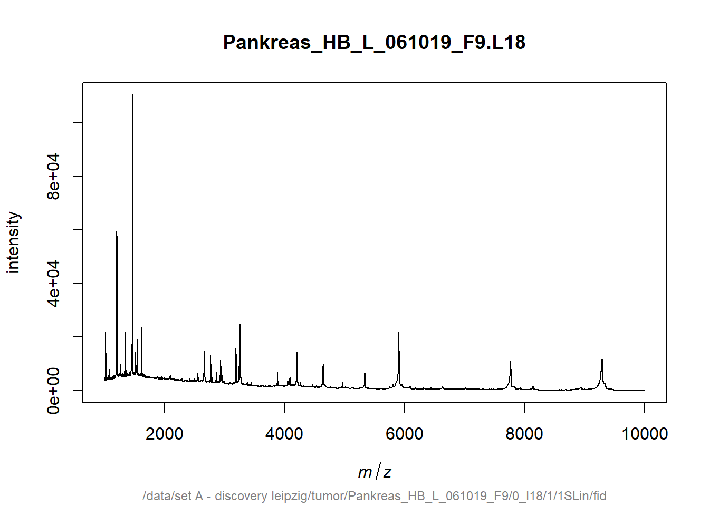

Chapter 6 Analyzing mass spectrometry data in R
6.1 Introduction
Since my last study I have become very interested in microbiology. This has led me to choose to follow my specialization in microbiology at my current study Life Sciences. This has made me even more enthusiastic about the profession. In 2 years time I see myself working in diagnostics at a medical microbiology laboratory. To achieve this goal, I will complete my graduation internship in a similar direction as well.
In microbiology, MALDI-TOF MS is currently a widely used method to quickly identify a bacterial species. For this reason, I thought it would be interesting to process raw data from a mass spectrometry experiment in R and visualize the results.
MALDI-TOF MS, or Matrix Assisted Laser Desorption/Ionization Time of Flight Mass Spectrometry, separates ions by their mass to charge ratio and determines that mass to charge ratio by the time it takes for the ions to reach a detector.
6.2 Planning
The first thing I’m going to do is delve into the analysis of mass spectrometry data in R. Have packages already been made for the analysis of MALDI-TOF MS data or mass spectrometry data in general?
To achieve my goal I will take the following steps:
- Finding articles about the subject of mass spectrometry
- Finding mass spectrometry data (preferably from a MALDI-TOF experiment)
- Finding out the structure of mass spectrometry data files
- Writing code to visualize mass spectrometry data
- Writing code to visualize or highlight specific m/z values in a figure
6.3 Data import
To get started with the processing of raw mass spectrometry data I will first need to find some data to work with. There are several packages with mass spectrometry data available. I used the data from the msdata package. The msdata data package provides multiple raw data mass spectrometry files.
# Load library
library(msdata)
# Get files from msdata
fls <- proteomics(full.names = TRUE)
basename(fls)## [1] "MRM-standmix-5.mzML.gz"
## [2] "MS3TMT10_01022016_32917-33481.mzML.gz"
## [3] "MS3TMT11.mzML"
## [4] "TMT_Erwinia_1uLSike_Top10HCD_isol2_45stepped_60min_01-20141210.mzML.gz"
## [5] "TMT_Erwinia_1uLSike_Top10HCD_isol2_45stepped_60min_01.mzML.gz"# Path variable to the file of choice
## I chose the second file, but you can change it to any you like. It is also possible to do all files.
path <- fls[2]
# Check
path## [1] "C:/Users/diand/AppData/Local/R/win-library/4.2/msdata/proteomics/MS3TMT10_01022016_32917-33481.mzML.gz"Now that I have provided the file path, I will try to access the data with the mzR package. The mzR package aims at providing a common, low-level interface to several mass spectrometry data formats. With this package I can check the number of spectra, which is important for a identification for instance.
# Load library
library(mzR)
# Get the MS file from the path variable
msfile <- openMSfile(path, backend = NULL, verbose = FALSE)
# Check number of spectra
msfile## Mass Spectrometry file handle.
## Filename: MS3TMT10_01022016_32917-33481.mzML.gz
## Number of scans: 5656.4 Spectra
We can check the spectra of the file we just loaded into R with the spectra function of the mzR package. It is possible to see specific spectra of the file by providing the index of a spectrum, but it is also possible to just check all spectra. Because I am not looking for a specific spectra I will check the spectra of sample 1. I also demonstrated the usage of the spectra function if you would like to look at two specific spectra or all spectra. The output is a matrix which consists of two columns. One column for the mflz-values and the second column shows the intensity’s for the mflz-files. If you load all spectra, in this case 565 spectra, it gives a lot of output. Under the guise of keeping this Rmarkdown tidy, I won’t show the output of the code to load all spectra.
# Read one spectra from the input file
spectra1 <- spectra(msfile, 1)
head(spectra1)## mz intensity
## [1,] 376.2217 0
## [2,] 376.2227 0
## [3,] 376.2237 0
## [4,] 376.2247 0
## [5,] 380.7361 0
## [6,] 380.7371 0# Read multiple specific spectra
spectra2 <- spectra(msfile, 1:2)
head(spectra2)
# Read all spectra from the input file
## all_spectra <- spectra(msfile)
## head(all_spectra)# Length of the spectra
length(spectra1)## [1] 966086.4.1 Visualisation spectra
To get a better overview of what exactly the spectra entail, I wanted to visualize the spectra. This can also be done with the mzR package. I used the peaks function to extract the peaks and visualize them in a plot. In this case spectrum 8 was used.
# Read a spectrum from the file
peak <- peaks(msfile, 8)
head(peak)## mz intensity
## [1,] 182.7910 39.12186
## [2,] 197.1867 46.60393
## [3,] 198.4393 92.85271
## [4,] 199.1400 52.84999
## [5,] 201.2341 42.46858
## [6,] 204.3054 54.46336# Count of the spectra peaks
peaksCount(msfile, 8)## [1] 858# Plot the peaks
plot(peak[,1], peak[,2], type = "h", lwd=1)
6.5 Annotation for each spectrum
Now that I have verified the presence of the spectra in the data, we can look at the corresponding annotation. This annotation is necessary to distinguish the spectra of different samples. In the data file I used, the different samples are encoded with numbers.
# Check annotation only
hdr <- header(msfile)
head(hdr)## seqNum acquisitionNum msLevel polarity peaksCount totIonCurrent retentionTime
## 1 1 32918 1 1 48304 3005937408.0 4422.620
## 2 2 32919 2 1 755 1025988.7 4422.648
## 3 3 32920 2 1 803 697426.6 4422.670
## 4 4 32921 2 1 765 1220569.9 4422.735
## 5 5 32922 2 1 499 494725.3 4422.800
## 6 6 32923 3 1 2540 2522363.0 4423.036
## basePeakMZ basePeakIntensity collisionEnergy ionisationEnergy lowMZ
## 1 696.7169 172620640.00 NA 0 376.2217
## 2 646.4719 121457.00 35 0 187.1043
## 3 641.8309 60390.23 35 0 188.2159
## 4 549.6967 103048.61 35 0 200.2342
## 5 718.6267 114702.83 35 0 166.0463
## 6 129.1378 275641.03 65 0 99.0060
## highMZ precursorScanNum precursorMZ precursorCharge precursorIntensity
## 1 1515.1263 NA NA NA NA
## 2 1645.9059 32918 652.3426 3 9841531
## 3 1701.1073 32918 647.3441 3 3921567
## 4 1596.3099 32918 673.3353 3 7623700
## 5 1374.6786 32918 575.0026 3 2357085
## 6 505.0462 NA 490.2629 0 0
## mergedScan mergedResultScanNum mergedResultStartScanNum
## 1 NA NA NA
## 2 NA NA NA
## 3 NA NA NA
## 4 NA NA NA
## 5 NA NA NA
## 6 NA NA NA
## mergedResultEndScanNum injectionTime
## 1 NA 0.8102598
## 2 NA 10.8435907
## 3 NA 18.6941528
## 4 NA 12.3253975
## 5 NA 8.1776628
## 6 NA 52.0793648
## filterString
## 1 FTMS + p NSI Full ms [380.0000-1500.0000]
## 2 ITMS + c NSI t d Full ms2 652.3426@cid35.00 [174.0000-1968.0000]
## 3 ITMS + c NSI t d Full ms2 647.6781@cid35.00 [173.0000-1954.0000]
## 4 ITMS + c NSI t d Full ms2 673.6693@cid35.00 [180.0000-2000.0000]
## 5 ITMS + c NSI t d Full ms2 575.0026@cid35.00 [153.0000-1736.0000]
## 6 FTMS + p NSI sps d Full ms3 673.6693@cid35.00 490.2629@hcd65.00 [100.0000-500.0000]
## spectrumId centroided
## 1 controllerType=0 controllerNumber=1 scan=32918 FALSE
## 2 controllerType=0 controllerNumber=1 scan=32919 TRUE
## 3 controllerType=0 controllerNumber=1 scan=32920 TRUE
## 4 controllerType=0 controllerNumber=1 scan=32921 TRUE
## 5 controllerType=0 controllerNumber=1 scan=32922 TRUE
## 6 controllerType=0 controllerNumber=1 scan=32923 FALSE
## ionMobilityDriftTime isolationWindowTargetMZ isolationWindowLowerOffset
## 1 NA NA NA
## 2 NA 652.34 0.35
## 3 NA 647.68 0.35
## 4 NA 673.67 0.35
## 5 NA 575.00 0.35
## 6 NA 490.26 NA
## isolationWindowUpperOffset scanWindowLowerLimit scanWindowUpperLimit
## 1 NA 380 1500
## 2 0.35 174 1968
## 3 0.35 173 1954
## 4 0.35 180 2000
## 5 0.35 153 1736
## 6 NA 100 500# Check annotation of specific spectra
hdr_sp <- header(msfile, 8)
head(hdr_sp)## seqNum acquisitionNum msLevel polarity peaksCount totIonCurrent retentionTime
## 1 8 32925 2 1 858 627600.3 4423.094
## basePeakMZ basePeakIntensity collisionEnergy ionisationEnergy lowMZ
## 1 663.859 28716.19 35 0 182.791
## highMZ precursorScanNum precursorMZ precursorCharge precursorIntensity
## 1 1715.989 32918 675.6938 3 4257284
## mergedScan mergedResultScanNum mergedResultStartScanNum
## 1 NA NA NA
## mergedResultEndScanNum injectionTime
## 1 NA 16.85191
## filterString
## 1 ITMS + c NSI t d Full ms2 675.6938@cid35.00 [181.0000-2000.0000]
## spectrumId centroided
## 1 controllerType=0 controllerNumber=1 scan=32925 TRUE
## ionMobilityDriftTime isolationWindowTargetMZ isolationWindowLowerOffset
## 1 NA 675.69 0.35
## isolationWindowUpperOffset scanWindowLowerLimit scanWindowUpperLimit
## 1 0.35 181 2000After obtaining the annotation, I want to visualize the data I have up until this moment. This can be done with the MSnbase package and the msdata package. The readMSdata function of the MSnbase package takes as input the file path to one or multiple raw mass spectrometry files. It generates an MSnExp object.
# Load library
library(MSnbase)
# Merge annotation with spectra
mse <- readMSData(path, mode = "onDisk", verbose = FALSE)
mse## MSn experiment data ("OnDiskMSnExp")
## Object size in memory: 0.32 Mb
## - - - Spectra data - - -
## MS level(s): 1 2 3
## Number of spectra: 565
## MSn retention times: 73:43 - 74:54 minutes
## - - - Processing information - - -
## Data loaded [Wed Aug 23 12:30:24 2023]
## MSnbase version: 2.24.2
## - - - Meta data - - -
## phenoData
## rowNames: MS3TMT10_01022016_32917-33481.mzML.gz
## varLabels: sampleNames
## varMetadata: labelDescription
## Loaded from:
## MS3TMT10_01022016_32917-33481.mzML.gz
## protocolData: none
## featureData
## featureNames: F1.S001 F1.S002 ... F1.S565 (565 total)
## fvarLabels: fileIdx spIdx ... spectrum (35 total)
## fvarMetadata: labelDescription
## experimentData: use 'experimentData(object)'# Access individual spectra information
mse[[8]]## Object of class "Spectrum2"
## Precursor: 675.6938
## Retention time: 73:43
## Charge: 3
## MSn level: 2
## Peaks count: 858
## Total ion count: 627600.3# Check annotation and raw spectra data
## The output will not be shown to keep the page tidy.
fData(mse)6.6 Visualization of the data
To visualize the spectral data with the annotations I created a function called visualizeSpectraWithAnnotations. This function takes the created mse object and an optional spectrumIndex parameter to specify which spectrum you want to visualize. Inside the function, I use mse[spectrumIndex] to access the spectral data for the selected spectrum. Next the attr function is used to access the annotation data associated with the spectrum. The spectra will then be plotted with the plot function. If annotation data is available, it will be printed to the console. You can customize this part to visualize or process the annotation data as needed.
# Function to visualize spectral data with annotations
visualizeSpectraWithAnnotations <- function(mse, spectrumIndex = 1) {
# Get the spectral data for the specified spectrumIndex
spectrum <- mse[spectrumIndex]
# Get the annotation data for the specified spectrumIndex
annotation_data <- attr(spectrum, "SpectraAnnotations")
# Plot the spectrum
plot(spectrum)
# Check if annotation data is available for the selected spectrum
if (!is.null(annotation_data)) {
# Print the annotation data
print(annotation_data)
}
}
# Usage:
## Assuming the 'mse' object is already created
## Visualize the first spectrum with annotations
visualizeSpectraWithAnnotations(mse, spectrumIndex = 1)
6.7 Analyzing MALDI-TOF MS data
Now that I have visualized raw mass spectrometry data, it is time for the real challenge. In the beginning of this chapter I already mentioned that I wanted to visualize MALDI-TOF MS data. For this instance I need to look for a package that works with this format. After some research I found the MALDIquant package. This package is specifically designed for MALDI-TOF MS data. To demonstrate the visualization of MALDI-TOS MS data I used the fiedler2009subset dataset. This data is a list of 16 mass spectrum objects and is available with the MALDIquant package.
# Load library
library(MALDIquant)
# Load data
data("fiedler2009subset")
# Quick inspection of two of the spectra
plot(fiedler2009subset[[2]])
plot(fiedler2009subset[[8]])
The identification of specific proteins or bacteria can be done in different ways. For example, a specific m/z value can be highlighted. It can also be useful to be able to highlight a known peak pattern, in this case of a bacterium. First of all, I tried to highlight a specific m/z value or at least indicate it in an entire spectra. To achieve this I wrote a function which takes as input the file with the m/z values, the desired m/z value to be highlighted and the tolerance. For example, if you set the mz_value parameter to 300.0 and the tolerance parameter to 0.1, the function will search for a peak in the spectra with an m/z value that is within ±0.1 of 300.0. If a peak is found within this range, it will be considered a match and highlighted in the plot.
# Load library
library(ggplot2)
# Create function
highlight_mz <- function(mzml_path, mz_value, tolerance = 0.1) {
# Open mzML file
msfile <- openMSfile(path, backend = NULL, verbose = FALSE)
# Find the nearest peak to the desired m/z value
nearest_peak <- NULL
nearest_distance <- Inf
spectra <- spectra(msfile, 1)
for (i in 1:length(spectra)) {
peaks <- peaks(msfile, 8)
distances <- abs(peaks[, 1] - mz_value)
min_distance <- min(distances)
if (min_distance < nearest_distance) {
nearest_peak <- peaks[which(distances == min_distance), ]
nearest_distance <- min_distance
}
}
# Highlight the nearest peak and create a plot
if (!is.null(nearest_peak) && nearest_distance <= tolerance) {
nearest_peak$intensity <- 1.0 # Set intensity to 1.0 to highlight
# Convert nearest_peak to data frame
nearest_peak <- as.data.frame(nearest_peak)
# Plot the spectrum
p <- ggplot(data = nearest_peak, aes(x = mz, y = intensity)) +
geom_line() +
geom_point(color = "red", size = 2) +
labs(x = "m/z value", y = "Intensity", title = "Highlighted m/z Spectrum")
print(p)
} else {
cat("No peak found within the specified tolerance.\n")
}
}
# Example usage
highlight_mz("msfile", 700.0, tolerance = 1.0)
As you can see the code is not working optimally. The indicated m/z value is indicated in the plot, but the spectra are not present. This is due to the fact that the fiedler2009subset is a list. For this reason I will try a different approach.
In the code below I created a loop that goes over the 16 spectra. First you can set the highlight_mz variable to the specific m/z value you want to highlight in the plots, in this case 3000. The next line opens a PDF file for saving the individual mass spectrometry plots named maldi_plot.pdf. The loop iterates through each MassSpectrum object in the fiedler2009subset dataset. Then the m/z and intensity values are extracted from the current MassSpectrum object using as.matrix. Finally, a plot is made of the mass spectra with the m/z values and the intensity values. The previously specified m/z value will be highlighted and all the plots will be visible in the maldi_plot.pdf file. This file is available in the data folder of this page. To show the output of this code two of the plots are displayed in this Rmarkdown.
# Select the specific m/z value you want to highlight
highlight_mz <- 3000
# Create a plot for each MassSpectrum in the list
pdf("maldi_plot.pdf") # Change the filename and format if needed
# Loop through the list of MassSpectrum objects
for (i in 1:length(fiedler2009subset)) {
ms <- fiedler2009subset[[i]]
# Extract the m/z and intensity values using as.matrix
ms_matrix <- as.matrix(ms)
mz_values <- ms_matrix[, 1]
intensity_values <- ms_matrix[, 2]
# Plot the mass spectrum
plot(mz_values, intensity_values, type = "l", col = "blue",
xlim = c(1000, 10000), ylim = c(0, max(intensity_values) + 100),
xlab = "m/z", ylab = "Intensity")
# Add a vertical line to highlight the specific m/z value
abline(v = highlight_mz, col = "red")
# Add a title to the plot
title(paste("Spectrum", i))
# Pause briefly to view each plot (optional)
Sys.sleep(2)
}
# Close the PDF file
dev.off()Spectrum 1 of the fiedler2009subset dataset
Spectrum 2 of the fiedler2009subset dataset
6.8 Conclusion
Looking back at the initial planning I can say that it is possible to visualize MALDI-TOF MS data in R and make a specific m/z value visible in a plot. With the written code, a clear pdf-file is now made of multiple spectra within a dataset. Also a specific m/z value can be highlighted within the spectra. In the future I would like to extend this code, so that the spectra of a dataset can be compared with the spectra of a specific bacterium.